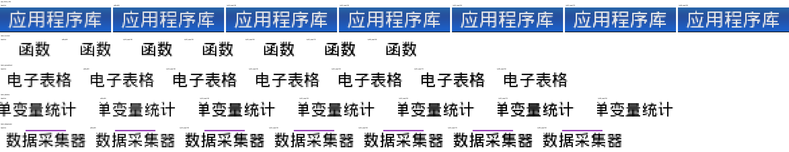

Recommended Order
Best current middle point. It reduces gray fringe and darkens strokes without moving into the hardest-looking range.
Use if lut32_ease150 looks too heavy on the real LCD. It keeps the same cutoff with a gentler curve.
Use if lut32_ease150 still looks too soft. It is visibly harder and should be checked against dense Chinese text.
Higher cutoff with the same curve. It trims more weak edge coverage and may feel crisper but drier.
Lower cutoff and softer curve. It keeps more edge coverage and is the least harsh of the new fine-tune set.
Useful as an upper bound for sharpness. The preview metrics show the largest blackish component and the highest blockiness risk.
Preview Viewer

Fine-Tune Metrics
Simulator-only metrics from four dense Chinese app-label regions. Lower midtone generally means less gray fringe; higher dark or solid means heavier strokes; larger blackish components are a blockiness warning.
| Variant | Avg foreground | Avg midtone | Avg dark | Avg solid | Max blackish component |
|---|---|---|---|---|---|
baseline | 0.3334 | 0.8062 | 0.3746 | 0.1129 | 44 |
softcut64 | 0.2727 | 0.8629 | 0.4577 | 0.1371 | 44 |
lut24_ease140 | 0.3040 | 0.6365 | 0.5366 | 0.3144 | 112 |
lut32_ease135 | 0.2938 | 0.6454 | 0.5240 | 0.3064 | 112 |
lut32_ease150 | 0.2949 | 0.6156 | 0.5618 | 0.3397 | 112 |
lut32_ease170 | 0.2955 | 0.5899 | 0.5980 | 0.3805 | 112 |
lut40_ease150 | 0.2850 | 0.6211 | 0.5655 | 0.3422 | 112 |